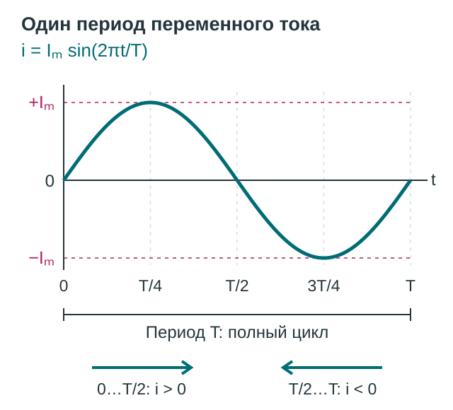
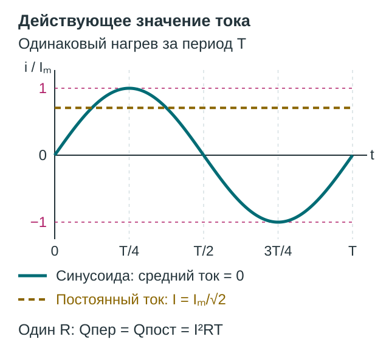
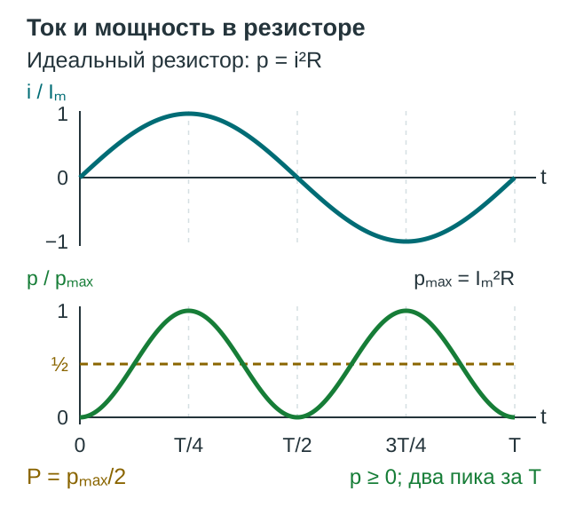

Переменный ток. Действующие значения и мощность
Ток меняет направление, а нагреватель всё равно греет. Почему? Проследим один период тока и разберём, чем различаются мгновенное, амплитудное и действующее значения.
1. Один период — два направления
Переменный ток меняет силу и направление. У синусоидального тока изменения повторяются по закону:
\(i\) — ток в выбранный момент, \(I_m\) — его амплитуда, \(T\) — период, \(f\) — частота, \(\varphi_i\) — начальная фаза. Угол в синусе измеряется в радианах, циклическая частота \(\omega\) — в радианах в секунду.


Положительный ток направлен по выбранной стрелке в проводнике, отрицательный — против неё. Минус показывает направление. Если ток меняется по величине, но остаётся направленным в одну сторону, его называют пульсирующим однонаправленным.
На рисунке начальная фаза нулевая. Соседние нули разделяет \(T/2\), а два соседних положительных максимума — полный период \(T\). За период направление меняется два раза.
Напряжение описывается аналогично: \(u(t)=U_m\sin(\omega t+\varphi_u)\). Синус и косинус задают ту же форму колебаний при разном выборе начальной фазы. Источник переменного напряжения поддерживает вынужденные колебания, восполняя потери энергии; свободные колебания реального контура без подпитки затухают.
2. Мгновенное, амплитудное и действующее значения
Мгновенное значение \(i\) или \(u\) — показание в конкретный момент. Оно может быть положительным, отрицательным или нулевым.
Амплитуда \(I_m\) или \(U_m\) — наибольший модуль. Размах между верхним и нижним пиками равен удвоенной амплитуде.
Действующее значение \(I\) — сила такого постоянного тока, который за то же время нагревает тот же резистор так же, как переменный. Сравнение проводим за целое число периодов. Действующее напряжение обозначаем \(U\).


Действующее значение — корень из среднего квадрата: \(I=\sqrt{\langle i^2\rangle}\), где скобки означают усреднение за период. Для синусоиды среднее \(\sin^2\) равно \(1/2\): в тождестве \(\sin^2x=(1-\cos2x)/2\) средний косинус равен нулю. Поэтому:
Эти формулы с \(\sqrt2\) относятся именно к синусоидальному сигналу. Для иной формы нужно находить средний квадрат заново. Действующее значение также называют среднеквадратичным, или RMS.
3. Ток меняет знак — мощность пульсирует
Рассмотрим идеальный резистор: сопротивление \(R\) постоянно, влиянием индуктивности и ёмкости пренебрегаем. Электрическая энергия превращается во внутреннюю. Для него закон Ома действует в каждый момент: \(i=u/R\); ток и напряжение совпадают по фазе. Для амплитуд \(I_m=U_m/R\), для действующих значений \(I=U/R\).
Мгновенная мощность \(p=ui\). Если \(u=U_m\sin\omega t\), а \(i=I_m\sin\omega t\), то:


В отрицательном полупериоде и ток, и напряжение отрицательны, поэтому их произведение снова положительно. У мощности два пика за период тока: её частота \(2f\), период \(T/2\).
Среднее значение \(\sin^2\) равно \(1/2\), значит \(P=U_mI_m/2\). Через действующие значения:
Для установившегося тока при неизменных параметрах за целое число периодов выделяется теплота \(Q=Pt\). При времени намного больше периода эта формула даёт хорошее приближение и без целого числа периодов; на коротком произвольном интервале нужно учитывать изменение \(p(t)\).
Проверьте понимание
- Чем период тока отличается от промежутка между соседними нулями? Что означает отрицательное значение тока?
- Почему средний ток нулевой, а нагрев есть? Какой постоянный ток эквивалентен переменному по нагреву?
- Чем отличаются мгновенное значение, амплитуда, размах и действующее значение? Почему коэффициент \(\sqrt2\) подходит не для всякого сигнала?
- Почему мощность резистора неотрицательна при обоих направлениях тока? Когда для средней мощности можно использовать \(P=UI\)?
Пять задач для самостоятельной работы
Резисторы считайте идеальными, сопротивление — постоянным. Ток и напряжение синусоидальны. В уравнениях время выражено в секундах.
- Прочитайте уравнение. Для \(i(t)=6\sin(200\pi t)\ \text{А}\) найдите амплитуду, частоту, период и действующее значение силы тока.
- От действующего значения к пикам. Действующее напряжение равно \(120\ \text{В}\). Найдите амплитуду и разность между максимальным и минимальным мгновенными напряжениями.
- Рассчитайте резистор. При \(R=40\ \text{Ом}\) и \(U=80\ \text{В}\) определите действующий ток, его амплитуду и среднюю мощность.
- Найдите теплоту. Через резистор \(20\ \text{Ом}\) проходит ток с амплитудой \(3\ \text{А}\). Найдите среднюю и максимальную мгновенную мощность и количество теплоты за \(10\ \text{с}\) при частоте \(50\ \text{Гц}\).
- Сравните ритмы. Частота тока в резисторе \(60\ \text{Гц}\). Найдите период тока, частоту и период пульсаций мгновенной мощности.
Домашнее задание
§31–32. Повторите различие мгновенных, амплитудных и действующих значений и условия применения формулы \(P=UI\).